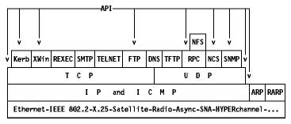

Table of Contents
Table of Contents  Symmetry
of the SIT model
Symmetry
of the SIT modelTable of Contents Symmetry
of the SIT model
The following chart shows the layered model of the TCP/IP protocol suite and
also indicates the application programming interfaces (API) available to the
user.

Figure: TCP/IP Layered Model
Note: Remote Procedure Call uses both TCP and UDP. It has been placed upon UDP here since NFS only uses RPC over UDP.
Note: ARP and RARP are only used on local area networks.
The IP/TCP/UDP socket API has been mentioned in Ports and Sockets. The other APIs will be explained in the next chapter:
 Routing
Protocols
Routing
Protocols